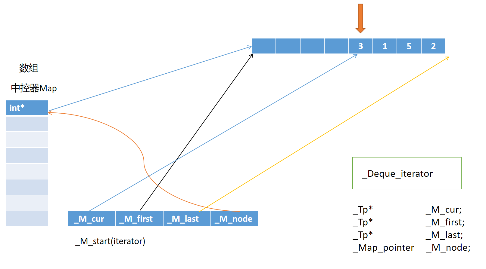
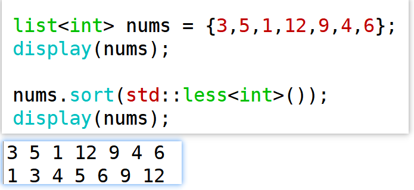
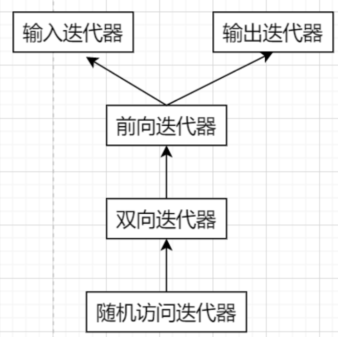

第三篇文章
第一章 STL标准模板库
标准模板库，即Standard Template Library，简称STL，是一个具有工业强度的，高效的C++程序库。它被容纳于C++标准库中，是ANSI/ISO C++标准中最新的也是极具革命性的一部分。该库包含了诸多在计算机科学领域里所常用的基本数据结构和基本算法。为广大C++程序员们提供了一个可扩展的应用框架，高度体现了软件的可复用性。
与之前学到的编程思想面向对象编程不一样，STL采用的是一种新的编程模式：泛型编程。它允许程序员编写通用的代码，即可适用于不同的数据类型，而不必为每种类型
编写不同的代码。这种编程方法的基本思想是将数据类型抽象化，使用泛型来表示数据类型，并在编写代码时使用泛型来代替具体的数据类型。本章重点在于介绍泛型编程的思想和本质，介绍一些常用的方法。
STL六大组件
1、容器：就是用来存储数据的，也就是数据结构。（重要）
- 序列式容器 vector、list、deque等
- 关联式容器 set、map等
- 无序关联式容器 unordered_set、unordered_map等
2、迭代器：就是为了访问容器中的元素，可以将其看成是一种指针，称为泛型指针。
3、算法：就是一些普通函数，可以操作容器中的元素。
4、适配器：起到适配的作用。
- 容器适配器 stack、queue、priority_queue
- 迭代器的适配器
- 函数适配器 bind、bind1st、bind2nd
5、函数对象：做定制化的操作
6、空间配置器：管理内存的（讲解使用 + 原理 + 源码）
数据结构 + 算法 = 程序
容器
序列式容器
序列式容器包括：静态数组array、动态数组vector、双端队列deque、单链表forward_list、双链表list。这五个容器中，我们重点了解三个vector、deque、list的使用，包括：初始化、遍历以及一些基本操作。另外，list还有一些特别的操作，也需要进行了解。
在之后的工作中，这些容器都是很常用的工具。在面试中，对容器的底层原理也可能会有一定的考察。
基本操作
初始化
总结：三种序列式容器vector、deque、list都具备五种初始化的方式，包括：无参、count个value、迭代器范围、拷贝或者移动、大括号范围==
遍历
总结：三种序列式容器vector、deque、list都支持使用迭代器以及增强for循环方式进行遍历。
但是因为list不支持下标，所以list不能使用下标进行遍历；vector与deque支持下标，可以使用下标进行遍历。

在尾部进行插入与删除
总结：三种序列式容器vector、deque、list都支持在尾部进行插入与删除==
在头部进行插入与删除
总结：deque与list支持在头部进行插入与删除，但是vector不支持。
模型理解
vector

vector头部是固定的，不能进行插入与删除，只提供了在尾部进行插入与删除的操作，所以如果真的要在头部插入或者删除，那么其他的元素会发生移动，这样操作就比较复杂。（时间复杂度O(N)）
deque
从应用层面上，deque所实现的效果是双端队列，自然可以支持头部插入删除与尾部插入删除。
list
list实现的是双向链表。
源码阅读*
想要对这几种容器有更清晰的认知，还可以结合源码来进行理解
vector的源码（了解）
继承图
源码
2
3
4
5
6
7
8
9
10
11
12
13
14
15
16
17
class vector
{
public:
typedef _Tp value_type;
typedef value_type* pointer;
typedef const value_type* const_pointer;
typedef value_type* iterator; //typedef _Tp* iterator;
typedef const value_type* const_iterator;
typedef value_type& reference;
typedef const value_type& const_reference;
typedef size_t size_type;
typedef ptrdiff_t difference_type;
};
//iterator相当于vector的内部类
vector<int>::iterator it;除了vector的数据成员，还可以看到一些成员函数的实现，比如push_back有可能发生的动态扩容（2倍扩容的机制就写在源码中）
**思考：**获取vector的第一个元素的首地址，应该怎么做
vector中at与operator[]都具备随机访问的含义，但是operator[]会有越界的风险，也就是不安全，但是at具备范围限制，更加安全一些。
deque的源码（了解）
deque的实现原理比vector复杂得多
继承图
原理
deque是由多个片段组成的，片段内部是连续的，但是片段之间不连续的，分散的，多个片段被一个称为中控器的结构控制（也称为map，但跟std::map不是一回事）
所以说deque是在物理上是不连续的，但是逻辑上是连续的。
初始化deque时，根据元素的个数分配一些缓冲区片段
在缓冲区片段中存放实际的元素，这里以int型元素为例。通常情况下，在初始化时第一个元素会被放置在第一个缓冲区中相对靠前的位置（而非第一个缓冲区的首地址，这样方便在头部添加元素）。
前后相邻的两个元素在逻辑上是连续的，但是物理层面上可能并不是连续的。
同时还会生成一个数组中控器（map），存放每个缓冲区片段的首地址。（注意map中的元素是int*，而不是严格意义的数组指针，这一点从源码中可以进行理解）
通常情况下，第一个缓冲区片段的首地址被放在中控器map的居中位置。
deque初始化完成后，进行添加元素的操作：
如果在尾部添加元素value
找到最后一个存放着元素的缓冲区片段，在其中最后一个元素的后面添加元素value。
如果此时最后的缓冲区片段是满的，那么就再申请一个新的缓冲区片段，将要添加的元素value存放在新片段的首个位置。同时中控器也加上一个元素（新片段的首地址），让中控器与新片段联系起来。
如果此时中控器已经满了，还要添加内容，那么开辟新的更大的空间作为中控器，将原本中控器中记录的地址值复制到新的中控器，并将最后一个缓冲区片段的首地址加入。
如果是在deque的头部添加元素value
找到已经存储的第一个元素的位置，在它的前面存放新元素value。
经过若干次头部添加元素之后，如果第一个缓冲区片段满了，还要继续在头部添加元素，则新开辟一个缓冲区片段（作为第一个片段），将value存在这个片段中的最后一个位置。同时在中控器的相应位置存放新的缓冲片段的首地址。
如果一直往deque头部添加元素，中控器的前半部分已经满了，后半部分还没满，就将中控器中记录的地址全都后移，将这个第一个缓冲区的首地址存入中控器的第一个位置。如果中控器全都满了，那就再开辟新的更大的空间作为中控器。
—— 每个缓冲区片段的大小是多大？
如果deque存放的元素类型的大小小于 512 字节。每个缓冲区片段的大小为 512 字节，512 除以元素类型的大小，就可以得到每个缓冲区片段能够存放的元素数量。
例如元素类型是 int，在 64 位系统中，sizeof(int)= 4 字节。那么 deque_buf_size(4) 的结果就是 512 / 4 = 128，即每个缓冲区片段可以存放 128 个 int 类型的元素。
这种设计的好处是，对于较小的元素类型，每个缓冲区可以存放较多的元素，减少了缓冲区的数量，从而降低了中控器（用于管理缓冲区的数组）的管理开销。如果元素类型大小大于等于 512 字节，函数返回 1。这表示每个缓冲区片段只存放一个元素。
比如自定义类型A的对象作为deque的元素，单个元素的大小超过了 512 字节，那么 __deque_buf_size(sizeof(A)) 的结果就是 1，每个缓冲区片段只会存放一个 A类型的元素。
—— deque的迭代器底层是和vector一样吗？
deque的迭代器比vector的迭代器复杂得多，
vector<T>的迭代器实际是对T*的包装，但deque的迭代器实际应该视为对象，数据成员包含四个指针，并且进行了一系列的运算符重载，使得迭代器能够像指针一样被使用。
insert操作（重要）
之前的push_back和push_front尽管可以插入元素，但是插入的位置都比较固定。
实际上三种序列式容器都允许在任意位置插入元素，使用insert函数即可，它们都具备以下四种插入的功能。

以list为例，双向链表由于其底层结构的原因，插入是非常方便的。
从参考文档出发可知三种序列式容器都有这样的插入方式，但insert过程中的细节却值得注意。
对于list
如果把list换成deque，情况会有所不同
在利用迭代器遍历容器元素并做出处理时，往往需要更新迭代器
—— list进行insert操作时，同样可以使用这样的方式更新迭代器。可自行试验，查看效果。
对于vector，insert操作执行过程中还存在着更大的隐患，可能导致迭代器失效
为什么会发生这样的情况呢？
当vector使用insert进行插入时，可能会发生动态扩容。比如上述的nums是一个“存满”状态的vector，此时size和capacity的结果是一样的。增加新的元素会进行扩容。
扩容的过程中会申请一块新的空间，然后将老的空间上的元素拷贝到新的空间来，然后会清理老的空间、这时如果还继续使用原本的迭代器，对应的也就是老的空间的地址，会出现问题，因为此时迭代器已经失效了。
解决方案：每次在使用迭代器进行insert操作时，更新迭代器（重新置位）

补充
之前在学习vector的push_back操作时，我们了解了2倍扩容机制。而insert导致的扩容，规则更复杂一些。
vector的insert扩容（了解）
1 | nums.size() = m |
erase操作(重要)
三种序列式容器都可以进行erase操作，用来删除容器中的单个元素或多个元素
list的erase操作
由于list的原理，list中的元素无论是插入还是删除都非常的方便。erase后迭代器it仍然指向原本的地址（实际已经不属于list元素的空间），想要继续正常使用it，需要进行迭代器更新。erase函数的返回值为被删除元素后一位元素对应的迭代器。

deque的erase操作
deque的erase操作后，迭代器it仍然指向原本的位置。但是原本的位置上存放的是什么，同样需要取决于删除的元素属于前半段还是后半段。
如果想要一个明确的效果，以便erase之后继续正常使用it这个迭代器，那么同样建议进行迭代器更新
如果将上述例子中的容器换成vector，似乎不会出现问题。
删除掉一个元素后，如果不更新迭代器，后面的元素往前移，迭代器仍指向原本的位置，对应的就是被删除的元素后一位的元素；
如果更新迭代器，迭代器指向也能够确保是后一位的元素，效果一样。
但在删除连续重复元素时，vector的erase操作也可能导致迭代器失效问题。
如下，我们在使用vector时很可能写出这样的代码，但结果并没有实现想要的效果：
此时通过it = nums.erase(it)这样简单更新迭代器并不能解决问题（效果一样）。问题的根本在于，无论是对于该删除的元素还是不该删除的元素，迭代器的偏移采取的是统一的方式。
因为在vector中元素是连续的，如果删掉某个元素，后面的元素前移，如果此时迭代器依然往后移动，有可能漏掉一些元素。
解决方式：在删除元素时，就不移动迭代器，从逻辑的角度上来说，对应的元素已经变成了被删元素的下一位。


—— 试一试对list完成上述操作，看看会有什么结果？
list进行erase时，还需要更新迭代器

元素的清空


总结：
三种序列式容器vector、deque、list都有clear清空元素、以及获取元素个数的函数size；
对于vector与deque，还有回收多余空间的函数shrink_to_fit；
对于vector还有记录容量大小的函数capacity
其他成员函数
1 | //三种序列式容器都具备交换的函数 |
emplace_back函数
这三种序列式容器还有两个值得关注的函数：emplace和emplace_back
emplace与insert对比，前者是直接在指定位置构造对象，后者是将一个已存在的对象复制并插入到容器中指定位置。
emplace_back与push_back对比， 前者是直接在容器尾部构造对象，后者是将一个已存在的对象复制并插入到容器末尾。

查看emplace_back的效果
同理可以查看emplace的效果

尝试分析下面这段代码的过程
比较难理解的是最后执行emplace操作时发生一次拷贝，其原理是：
当需要在中间插入元素时（无论是insert还是emplace），标准库会采用一种 “块移动” 的策略。它会先把插入位置之后的所有元素视为一个整体，然后将这个整体一次性向后移动一个位置，而不是逐个元素进行拷贝。在这个过程中，可能只会触发一次拷贝构造，用于将最后一个元素拷贝到新的位置，其他元素则是通过内存移动来完成位置调整。
接着请思考一下，上面的代码如果在emplace之前没有进行insert操作，又会是怎样的结果呢？
对于这些常用操作，想要更加熟悉，需要多多动手验证，才能了解规则和实现效果。
list的特殊操作（重要）
list还具有一些vector与deque没有的函数。
注意，这里说的特殊操作也是属于list的成员函数，在使用时仍然是成员函数的使用方式。
sort函数
将list中的元素排序
简单示例：
如果使用无参版本的sort函数，则list中的元素默认以升序排列。
第二个版本的sort函数有一个参数，参数为Compare类型的对象。关于Compare，第一次见到应该是在set类模板声明中
之前在简单使用set时我们知道元素会默认按照升序排序，这里就是使用了
std::less<key>的效果。做个测试：效果和无参的sort版本是一样的，同样采用升序排序。
这里std::less实际上与之前unique_ptr的默认删除器是很相似的。
通过cpp参考文档能够了解到std::less进行了函数调用运算符的重载，在operator()函数中接受两个参数，代表两个元素，在函数定义中对两个元素进行了比较。
—— 如果想要按照降序排列，对应位置可以换成std::greater
当然，针对需要排序的各种元素类型，可能需要更灵活的Compare，那么我们可以像定制化删除器一样定制化Compare
会发现自定义的Compare对象被当成函数调用了很多次，可以简单阅读list的sort函数源码
其底层实现实际是一种基于归并排序的做法
reverse函数
将list的所有元素顺序反转
注意和vector的reserve函数区分，拼写上非常相似。

unique函数
去重list中重复的元素
需要先排序（无论是从小到大还是从大到小），才能够实现效果

merge函数
将一个list合并到当前list中
注意：想要合并后的list结果是有序的，需要合并前两个list中的元素先按照从小到大的顺序排好序。
结果：
nums2中的元素已经合并到nums1中了，nums2的元素被清空了。
splice函数
还有一个稍稍复杂的特殊操作splice

第一个参数相当于是移动的目的地


如果在同一个链表中进行splice操作

但是也可能会出现问题（取决于范围有没有交叉）
类似于strcpy，目的字符串与源字符串不要有交叉。同理还有memcpy也是要注意这个问题。
补充：
splice函数可以帮助我们很方便地实现LRU(Least Recently used)
LRU:最近最少使用算法
一种常用的页面置换算法，用于在有限的内存空间中管理数据缓存，以提高系统性能。
LRU 算法基于一个假设：如果一个数据在最近一段时间内没有被访问，那么在未来它被访问的概率也相对较低。因此，当内存空间不足时，LRU 算法会选择淘汰最近最少使用的数据，为新的数据腾出空间。
2
3
4
5
6
7
8
9
10
11
12
13
14
比如现在有 1 2 3 4 四个元素逐一存到容器中，限制容量为4
刚存放完 插入元素3 插入元素5 插入元素4
4 3 2 1 ----> 3 4 2 1 ----> 5 3 4 2 ---> 4 5 3 2
//假设现在插入元素2
int number = tmp.back();
tmp.pop_back();
tmp.push_front(number);
//如果明确了是用list存储，可以使用splice函数，
tmp.splice(tmp.begin(), tmp, --tmp.end());
关联式容器
关联式容器包括：set、multiset、map、multimap四种。它们的底层使用的数据结构都是红黑树。要学习它们的使用，可以从：初始化、遍历、查找、插入、删除、针对自定义类型等方面进行学习。
- set特征
存放的是key类型，key值是唯一的，不能重复
默认按照key值进行升序排列- multiset特征
存放的是key类型，key值不一定唯一，可以重复
默认按照key值进行升序排列- map的特征
存放的是key-value类型，key值是唯一的，不能重复，value没有要求是否唯一
默认按照关键字key进行升序排列- multimap的特征
存放的是key-value类型，key值不一定唯一，可以重复，value没有要求是否唯一
默认按照关键字key进行升序排列
set的使用
构造

- 无参构造
- 迭代器方式进行构造，传入一个first迭代器，传入一个last迭代器
- 拷贝构造
- 标准初始化列表（大括号的形式）
基本特征

查找

insert操作


注意：关联式容器都没有头部插入/删除或者尾部插入/删除的函数。
erase操作

注意：
set不支持下标操作，因为没有operator[]函数

所以访问set的元素只能通过迭代器方式，但通过迭代器访问到的元素只能进行读操作
set的元素不支持修改

针对于自定义类型的写法（重要）

对于set而言，当Key类型是类类型的时候，那么第二个模板参数Compare默认会采用std::less，但是std::less针对的Key如果不能比较大小，就需要进行改写。
改写的方式有如下三种：模板的特化、运算符的重载、函数对象
直接定义一个存放Point的set，编译一定会报错，根本原因在于默认的std::less针对Point对象并不知道该如何比较大小
std::less是一个通用模板类，针对解决不了的特殊类型，可以想到特化模板
为std::less准备一个特化版本，这个特化模板类中定义函数调用运算符重载函数，定义一套Point对象的比较规则

自定义对象的比较规则当然也是自定义的，例如：
定义getDistance获取点到原点的距离，先比较到原点的距离，如果相同再比较横坐标，如果相同再比较纵坐标。

注意：
- 在operator()函数中需要访问Point的私有成员，可以有两个思路：
（1）在自定义类中中作相应的友元声明；
（2）给Point提供公有的get系列函数，间接访问Point的私有数据成员
- 函数调用运算符重载函数最好设为const函数
因为在 C++17 中，std::set 要求比较对象必须是 常量可调用 的。模板参数列表中的class Compare在set的底层实现中会创建出对象，并作为函数对象使用，也就是调用operator函数，这个函数需要是const成员函数。
这涉及了set的内部实现的版本演变，此处不做探究。
参考std::less的operator()函数

当然，如果让std::less通用模板知道Point对象该怎么比较大小可以做到吗？当然可以，使用运算符重载就行。
operator<以友元方式重载

这个场景下，如果特化模板与运算符重载同时存在，模板的特化优先级高于运算符重载。
上面两种方法都是围绕着std::less想办法，我们也可以自已准备Compare类（类似于智能指针的删除器，也可以理解为自定义比较器）
Compare类重载函数调用运算符，set的底层实现中使用Compare类对象作为函数对象，以此指示元素的排序。

multiset的使用
基本特征
包含于<set>头文件

其他功能
multiset的查找功能（count、find）、插入功能（insert）、删除功能（erase）与set是一样的。
multiset也没有下标操作，也同样不支持使用迭代器修改元素。
bound系列函数
注意：equal_range返回的范围仍然是前闭后开的范围
如下，可以用两种方式找出multiset中所有等于key的元素

针对于自定义类型
multiset针对于自定义类型的用法与set完全一样，也有三种形式：模板的特化、函数对象的形式、运算符重载。
map的使用
基本特征

查找

insert操作

map也有三种插入的方式，插入一个元素、插入迭代器范围的元素、插入大括号范围的元素。
注意：
插入时是要插入一个或多个pair，而不是插入key或者插入value
插入单个元素可能不成功（这个元素已经存在于map中）

erase操作

注意：map可以删除迭代器指向的元素、以及迭代器范围的元素
下标操作（重要）

针对于自定义类型

如果key本身是可比较类型，value是自定义类型，其实不需要额外的操作，map可以正常进行遍历。

如果Key对应的是自定义类型
之前写的函数模板可以遍历前面五种容器的元素，但是map不行
因为map的元素都是pair，而pair不能直接用输出流运算符进行输出。
此时有两个display构成函数模板的重载，第一个适用于任意的容器类型，第二个专门用于map类型；
在调用display时会首先尝试调用第二个，如果能匹配则使用，如上图的
mps是一个map对象，正好可以使用；如果不能匹配则尝试调用其他的display模板，如上图的
pts显然是无法匹配map<T1,T2>的，所以无法使用第二个模板，当然如果想要使用第一个函数模板，还需要为Point重载输出流运算符。

上述讨论仅仅是解决map元素的遍历问题，想要成功完成创建，仍然要让编译器能够根据key值给map的元素排序。
给Point重载<运算符，或者针对Point特化std::less，代码都可以直接通过。
但如果用的是函数对象的方法，在遍历时还需要一点改动。
multimap的使用
基本特征

其他操作
multimap的查找功能（count、find）、插入功能（insert）、删除功能（erase）与map是一样的。
不支持下标

针对于自定义类型
使用方式与map完全一样。
总结
1、关联式容器中的元素会按照key进行排序。
2、底层使用的都是红黑树数据结构
3、map是具备下标的，其他三种关联式容器没有下标。
无序关联式容器
无序关联式容器底层是哈希表实现的。
首先来回顾一下哈希表
哈希相关的概念
哈希(过程)：
- 哈希是一种可以接受各种类型、大小的输入，输出一个固定长度整数的过程。
- 你可以将哈希理解成一种特殊的映射，将一个理论无限的集合A映射到有限整数集合B上。
哈希函数：哈希函数是哈希过程的核心，它决定了哈希映射过程的规则。
哈希冲突：哈希是一种化无限为有限的映射。理想中的映射应该做到一一对应，即“不同的输入一定得到不同的输出，同样的输入一定得到同样的输出”。但这种理想情况其实是做不到的。退而求其次，在实际使用中我们允许出现多对一（不同输入得到相同输出），但绝不允许出现一对多（相同输入得到不同输出）。
若映射中出现多对一，就是哈希冲突。哈希冲突可以减少，但绝不可能没有。
可以通过key找到在表中的位置
1 | index = H(key) |
如何构建哈希函数
定址法： H(key) = a * key + b
平方取中法： key^2 = 1234^2 = 1522756 ——>227
数字分析法：H(key) = key % 10000；
除留取余法：H(key) = key mod p (p <= m, m为表长)
哈希函数之所以要设计得这么复杂，就是为了尽量减少哈希冲突
不同的key值所对应的位置一样，这就是哈希冲突
1 | key1 != key2 |
如何解决哈希冲突
开放定址法
**链地址法 **(推荐使用这种，这也是STL中使用的方法)
再散列法
建立公共溢出区

那么表长应该如何设计比较合理？
这里还涉及到一个概念——装载因子，或者称为装填因子。
装载因子a = 元素的个数/表长，一般是一个小数。如果装载因子的值比较大，冲突的概率比较大，空间利用率比较高；如果装载因子的值比较小，冲突的概率比较低，空间利用率比较低；需要做一个权衡，一般设置在0.5~0.75左右。
unordered_set的使用
unordered_set在使用时除了元素的类型，还需要关注几个模板参数
Hash决定了具体使用怎样的哈希函数，通过Hash类的operator()函数确定，而哈希冲突的解决方式则是由容器内部的实现机制确定的；
KeyEqual决定了元素的判重方式，同样也是通过operator()函数确定。
对于内置类型和指针类型，可以直接使用这一容器，如果是自定义类型对象作为元素，则需要为其准备这些模板参数。
基本特征
创建unorder_set的方式和之前的容器没有多大区别。

无序 + 去重的效果
其他操作
unordered_set的查找（count、find）、插入（insert）、删除（erase）等常用操作与set完全一样。也不支持下标。
针对于自定义类型（重要）

针对于自定义类型而言，可能需要改写第二个模板参数Hash与第三个模板参数KeyEqual。
Hash的默认采用的是std::hash，所以可以改写的方案有两种：模板的特化、函数对象的形式，与运算符重载没有什么关系。


第三个模板参数KeyEqual的传参有三种方式：模板的特化、函数对象的形式、运算符重载。


unordered_multiset的使用
基本特征

其他操作
unordered_multiset的查找（count、find）、插入（insert）、删除（erase）与multiset完全一样。也不支持下标。
针对于自定义类型
unordered_multiset针对于自定义类型的写法与unordered_set的用法一样，需要改写第二个参数Hash与第三个参数KeyEqual。
unordered_map的使用
基本特征

其他操作
unordered_map的查找（count、find）、插入（insert）、删除（erase）与map是完全一样的。
支持下标（==重要==）

unordered_multimap的使用
基本特征

其他操作
unordered_multimap的查找（count、find）、插入（insert）、删除（erase）与multimap是完全一样的。
不支持下标

总结
1、无序关联式容器中的元素是没有顺序的。
2、底层使用的都是哈希表数据结构
3、unordered_map是具备下标的，其他三种无序关联式容器没有下标。
容器的选择（重要）
元素是不是有顺序的
如果元素是有顺序的，首选的是关联式容器，不应该选择的是无序关联式容器。其次可以选择序列式容器。
序列式容器中的元素也可以排序，list中是有sort函数的，对于vector与deque可以借鉴算法库中的sort函数进行排序。
迭代器的类型
随机访问迭代器：vector、deque
双向迭代器：list、关联式容器
前向迭代器：无序关联式容器
查找的时间复杂度
序列式容器：时间复杂度O(N)
关联式容器：时间复杂度O(logN)
无序关联式容器：时间复杂度O(1)
是否支持下标
序列式容器：vector、deque
关联式容器：map
无序关联式容器：unordered_map
容器适配器
容器适配器的作用
栈(stack)
队列(queue)
优先级队列


对于vector或者deque，value_type就是T，即priority_queue的Compare要提供的是对容器中元素的比较方式。
基本使用方法
对优先级队列的元素进行遍历，以前常用的几种方式都不支持（下标、迭代器、增强for循环）
参考C语言中对栈或者队列中元素遍历的方式
以下的遍历实际上是清空式的遍历，遍历完后优先级队列实际上没有元素了。如果不想进行清空式的遍历，可以在遍历之前先复制一次priority_queue

默认的compare是std::less，最终呈现的效果为什么是从大到小，而不是从小到大呢？
稍微修改一下代码，往空的优先级队列添加元素，观察填充过程
优先级队列使用了大根堆，其过程：
当有元素插入的时候，会将该元素与堆顶进行比较（细节上实际是一级一级比较），如果堆顶比新插入的元素要小，就会满足std::less，会将新插入的元素作为新的堆顶；
如果新插入的元素与堆顶进行比较，堆顶比新插入的元素要大，那么就不满足std::less，就不会进行置换，上一次的堆顶仍然是堆顶。
使用函数总结
判空：empty;
元素的个数:size;
插入:push;
删除：pop;
获取top元素:top;
交换函数:swap;
注意，没有迭代器的概念。
针对于自定义类型
因为优先级队列的第三个模板参数使用的是Compare，默认值是std::less,所以如果自定义类型不能进行比较，就需要进行改写，改写的方案与set针对于Compare的改写方式完全一样，有三种：模板的特化、函数对象的形式、运算符重载。
请尝试实现一下使用优先级队列存放Point对象。
迭代器
概念
可以将迭代器看成是一种指针，但是不完全是指针，因为有些时候迭代器是一个类类型，然后重载了指针的功能，所以迭代器可以像指针一样使用。
—— C++为什么要设计迭代器这种东西？
迭代器算是C++一个非常重要的抽象概念，它的意义在于：
- 为访问容器中的元素提供了统一的方式。比如vector/deque/list三种容器存储元素的方式完全不同，存储元素的类型也可能不同，但是都可以用迭代器来遍历和操作容器中的元素，而不需要关心容器的具体实现细节。
- 使算法能够独立于容器进行设计和实现。例如，std::sort算法可以对任何支持随机访问迭代器的容器进行排序，而不需要为每种容器单独实现排序算法。这样可以提高代码的可复用性和灵活性。
也就是说C++通过迭代器把不同的容器的元素的访问逻辑抽象了出来。
迭代器的类型
输入迭代器(InputIterator)、输出迭代器(OutputIterator)、前向迭代器(ForwardIterator)、双向迭代器(BidirectionIterator)、随机访问迭代器(RandomAccessIterator)
五种迭代器之间的关系（继承关系）
举个简单的例子，根据我们对继承关系的了解，我们可以推测出：

为什么要定义这么多种迭代器呢？
为了物尽其用，使得具体的操作使用具体类型的迭代器，避免迭代器的功能太大或者太小，导致使用起来不方便。每个容器及其对应的迭代器的类型图表如下：
流迭代器
输出流迭代器
流迭代器是特殊的迭代器，可以将输入/输出流作为容器看待(因为输入输出都有缓冲区的概念)，可以用来存数据。因此，任何接受迭代器参数的算法都可以和流一起工作。
先通过cpp参考文档看到输出流迭代器构造函数的说明
尝试使用一下输出流迭代器，如下（使用了algorithm提供的copy函数）

其实结果很容易推测出来。至此，我们发现又多了一种遍历容器元素的方式，那么这个输出的效果是怎么实现的呢？
—— 通过源码来认识。
输出流迭代器的类模板形式：
1 | template <class _Tp, |
copy函数的实现（cpp参考文档相关页直接给出）
1 | template<class InputIt, class OutputIt> |
以上述例子为参考进行分析
1 | //copy(vec.begin(), vec.end(), osi); |
输入流迭代器
有了输出流迭代器的基本认知后，我们再来看看输入流迭代器
首先是它的构造函数
可以利用一个通用输入流对象初始化istream_iterator
根据推测可能写出这样的代码，但是会出现段错误
正确使用
通过源码进行理解
1 | template <class _Tp, |
back_insert_iterator的实现
1 | template <class _Container> |
迭代器适配器
三组插入迭代器适配器（掌握）
back_inserter是函数，该函数的返回类型是back_insert_iterator，它们的底层会调用容器的push_back。
front_inserter是函数，该函数的返回类型是front_insert_iterator，它们的底层会调用容器的push_front。
inserter是函数，该函数的返回类型是insert_iterator，它们的底层会调用容器的insert。
看一个简单的例子
要将list的元素插入到vector尾部，除了以往的常规方式（遍历list的元素，再使用vector的push_back函数添加这些元素），还可以使用上迭代器。
—— 再将vector的元素插入到list头部
从得到的结果可以想到，执行的过程是从头到尾遍历vector的元素，然后一次次执行了push_front函数。、
那么，可不可以将list元素插入到vector头部呢？
—— 将list的元素插入到set中

注意：使用上述三种插入迭代器的时候，如果容器本身不具备对应插入函数的话，那么就不能乱用。
反向迭代器适配器

注意遍历时偏移的方式，仍然是自增

算法
特点
STL的算法库中的函数，都是属于普通函数（并不是哪一个类的成员函数）
分类
- 非修改式的序列算法 for_each、count、find
- 修改式的序列算法 copy、remove_if、remove、replace、fill
- 排序函数 sort
- 二分搜索的算法 lower_bound、upper_bound、equal_range
- 集合操作 set_intersection（取交集）
- 堆相关的函数 make_heap、push_heap
- 取最值 max、min
- 数值操作 itoa
- 未初始化的内存操作 uninitialized_copy
for_each函数的使用
首先看看cpp参考文档的描述
第三个参数需要传一个一元函数（或者仿函数），其函数形参只有一个（不一定要有const或者&）
一元函数：函数的参数只有一个；
二元函数：函数的参数只有两个。
来看一个简单的应用

想要通过for_each改变vector中元素的内容，就得在func函数上做文章，可以给func函数形参改成引用。
实际使用时，f函数是否改变容器元素，for_each是没有限制的
参考for_each的源码
1 | template<class InputIt, class UnaryFunction> |
lambda表达式(重要)
以for_each的使用为例，有时为了使用一些简单的函数，会经常使用到lambda表达式
语法结构
lambda表达式也成为匿名函数，其基本语法结构如下：
1 | [capture](params) opt -> retureType |
其中capture是捕获列表，params是参数列表，opt是函数选项，retureType是返回值类型，body是函数体。
如下的lambda表达式中
[] 捕获列表：捕获lambda表达式函数体外的局部变量；
() 函数的参数列表
{} 函数的函数体

如果没有在[]中捕获a、b，那么在匿名函数的函数体中无法访问它们
进一步的，还可以给匿名函数增加函数参数，以及指定函数返回类型
注意：
捕获列表捕获的是局部变量，全局变量不需要捕获。
引用捕获与值捕获的区别
如果想要通过捕获列表改变局部变量的值
函数选项的位置加上mutable关键字才能对局部变量a/b进行修改操作，但这样做也并不能修改a和b实际的值
看到上述的结果，应该能联想到常规函数的值传递场景，想要真正通过形参改变实参，形参需要写成引用形式。
那么对于匿名函数而言，如果想要在匿名函数中修改捕获的变量其本身的值，那么应该采用的是引用捕获
另外，对于全局变量和函数参数，匿名函数中可以直接完成修改。
如果需要捕获的内容太多，有一些比较方便的写法：
如果想将外部局部变量全部捕获，可以在捕获列表中使用=，表示全部是值捕获；或者使用&，表示全部是引用捕获。
如果某一个变量是值捕获，其他的全部是引用捕获，可以[&, num];
如果某一个变量是引用捕获，其他的全部是值捕获，可以[=, &num];
最简单的方式是，将每个变量的捕获形式单独写出来，理解起来更简单。
lambda表达式可以被接收
现在考虑到一个问题，在前面的例子中，匿名函数每次都是当场定义当场调用的，那么匿名函数是否可以像普通的函数一样去复用呢？

对lambda表达式有了一定了解之后，我们可以看看这个小练习
以下的写法哪些是对的，哪些是有问题的？
（1）
1 | class Example |
（2）
1 | void test() |
总结：
对于lambda表达式，大家可能会在实际代码中见到非常多种形式，需要读懂它的意思
（1）lambda表达式的参数列表与普通函数的参数列表一样，如果没有参数，则参数列表可以省略不写；
（2）如果没有需要捕获的内容，需要写上[]；
（3）选项如非必需，可以省略
mutable: 可以修改按值传递进来的拷贝（注意是能修改拷贝，而不是值本身）
exception: 指定函数抛出的异常，如抛出整数类型的异常，可以使用throw();
（4）返回类型可以省略。通过返回值后置语法来定义的。一般情况下，不指定lambda表达式的返回值，编译器会根据return语句自动推导返回值的类型，但需要注意的是labmda表达式不能通过列表初始化自动推导出返回值类型。
1 | //ok，可以自动推导出返回值类型 |
（5）函数体不能省略，但可以为空。
1 | auto f = [](){}; |
lambda表达式的返回类型
至此仍然存在一个问题auto推导出来的类型究竟是什么呢？
lambda表达式的返回类型与匿名函数的returnType并非是同一件事。
lambda表达式的返回类型在C++11中会被看做是一个带operator()的类，即仿函数。按照C++标准，lambda表达式的operator()默认是const的，一个const成员函数是无法修改成员变量值的。mutable选项的作用就在于取消operator()的const属性。
这里附上一个网站：https://cppinsights.io/
可以通过它查看编译器是如何处理代码的。
因为lambda表达式在C++中会被看做是一个仿函数，因此可以使用std::function和std::bind来存储和操作lambda表达式（算法适配器的使用）
关于这一部分，到1.4.6这一节再来进行演示说明。
remove_if函数
基本使用
首先还是通过cpp参考文档出发

第三个参数p是一个一元谓词。
一元函数：函数的参数只有一个。二元函数：函数的参数只有两个。
一元断言/谓词：函数的参数只有一个，并且返回类型是bool。二元断言/谓词：函数的参数只有两个，并且返回类型是bool
根据函数的说明，能够理解它的作用，那么可以简单尝试着使用一下，如下想要移除vector中大于5的元素：
但是发现没有得到想要的结果，那么可以从源码出发来进行探索。
源码
1 | template<class ForwardIt, class UnaryPredicate> |
跳转到find_if函数查看
1 | template<class InputIt, class UnaryPredicate> |
接着往下看
1 | //使用的代码 |
还有一件有意思的事，期待的最终结果是{1,3,5,4,5}，而这样的理想结果实际上已经是vector的前五个元素了。
而且remove_if函数的返回值就是待删除的元素的首迭代器。
思考：
为什么remove_if的设计不是直接去把满足条件的元素直接删掉呢？这样不就不需要再配合erase函数才能完成最终效果了吗？
——因为vector的元素被删除后，后面的元素会往前移，然而迭代器仍然往后移，就会造成遗漏某些元素没有处理。
那么删除元素时迭代器不往后移可以吗？
——对于vector可行的逻辑，但是对于list，反而是应该后移，这样算法就失去了普适性。
思维拓展：
remove_if实际上最终的效果是同时做了两件事，更改了容器中特定位置的元素，并且返回了待删除元素的首迭代器。
在我们以往的认知中，同时干两件事总是比较容易出问题。比如多线程环境下，一个线程对某个数据进行写操作，一个线程对它进行读操作，如果不加锁的话，没法确定执行的先后，可能会出现预期之外的值。可以通过下面的例子来理解一下：
大家认为这样一串代码会有什么样的结果呢？运行一下，可能会大跌眼镜。
回顾vector迭代器失效的原理，试试该怎样解决。
回到remove_if的使用，第三个参数是一元谓词
1 | bool func(int value) |
当然也可以用lambda表达式替代
1 | vector<int> vec = {1,3,5,9,6,4,6,5}; |
进一步地，如果我们想要更灵活地指定删除元素的标准，比如大于4的删除、大于6的删除，那么最直观的想法会是给func函数加参数
但是这样一来func函数就成为了二元谓词，不能直接作为remove_if的参数了
可能会想到给func函数加上默认参数，试一试
1 | bool func(int value, int a = 5) |
实际上，可以利用算法适配器实现这一效果。
算法适配器
函数绑定器bind1st、bind2nd
如下模板形式中，两个函数绑定器的第一个参数就是一个函数，第二个参数就是一个数字，如果F是一个二元函数(普通二元函数或者二元谓词)，我们可以绑定F的第一个参数(bind1st)或者第二个参数(bind2nd)，达到我们想要的效果(使用二元谓词的效果)

接收两个参数，返回比较的结果（bool值），这种行为很容易让人联想到之前学习过的std::less和std::greater
那么我们可以写出这样的代码
1 | void test0() |
—— 那么这样做的结果是删除所有大于5的元素还是所有小于5的元素呢？
—— 还可以利用上bind2nd（固定第二个参数），以及std::greater（其底层的operator()函数逻辑不同），分别试试搭配使用的效果并分析
bind（非常重要）
bind1st、bind2nd适用于二元函数，那么如果函数的参数更多呢？实际上有一个更通用的手段，就是bind
基本使用
如下，bind可以绑定N元函数，并用统一的方式进行使用。

根据cpp参考文档的解释，第一个参数可以是函数对象、函数指针、函数引用(比较少见)、指向成员函数指针或指向数据成员指针。如上将函数名直接作为参数，相当于是传入函数指针。其他的几种情况也可以试试：
函数对象
函数引用
成员函数指针稍稍复杂
指向数据成员的指针（当然这种写法比较奇特，仅作了解）
用这种方式访问Example类的成员还有一个前提 —— 这些成员都是public权限的。
引用折叠
看回bind的声明形式，第一个参数看起来是一个右值引用，为什么在真正使用过程中，传入一些左值也可以呢？
这涉及到模板中的引用折叠
如下代码修改成模板后是可以正常运行的：
在调用func时，如果传入的实参是左值，那么T会被推导成左值引用；如果实参是右值，那么T会被推导成右值引用
1 | template <typename T> |
模板中a为T&&类型，那么会造成多个引用符号写到一起。我们自己在写代码时不能将两个以上的引用符号写到一起，但是模板推导时会遵循一套引用折叠的机制
1 | //T &&有两种情况 |
根据上面的引用折叠规则可知，模板中写成T&&，实参既可以传左值，也可以传右值；如果模板中写成了T&，那么实参就只能传左值。
函数指针
接下来需要思考的一个问题是，上面的bind函数调用的返回值究竟是什么，我们每次都使用了auto关键字，那么auto究竟推导出什么类型？
看到某一个变量后加上括号，起到调用函数的作用，应该会联想到以前学习过的函数指针。
假设有相同类型的函数
1 | int func() |
func和func2的返回类型与参数情况一致，可以使用同种函数指针进行调用。为了方便使用，可以给这种函数指针类型起别名。
函数指针被初始化为函数的地址(函数指针指向函数)相当于是函数的注册；
使用函数指针调用函数时才会执行函数。
这就对应了一种延迟调用的思想（先注册，后执行），可以用来作回调函数。与之理念相似的还有C++的多态思想：基类指针调用虚函数时，只有到运行时（根据基类指针究竟指向的是哪个派生类对象）才能确定具体执行哪个虚函数。

占位符
回到bind的基本使用，似乎每次都需要将被绑定的函数的所有参数都一起传入。
除此之外，还有一种占位符的写法。

还可以进一步地：
这里的使用实际上非常容易出错，看看更多参数的情况：
这样写自然没有问题
如果将占位符改换一下，却会出错

也就是说使用了_4这个占位符，那么在传入实参时至少要传入4个参数。（f调用时可以传很多个参数，多余的参数被舍弃）
对于func函数，第一个参数是传入的10，第二个参数是占位符匹配到的20，第三个参数是占位符匹配到的400，第四个和第五个则是传入的number
可以理解为占位符整体代表的是形参的位置，占位符中的数字代表的是实参的位置。
—— 再看一个有意思的事情
说明了bind的默认传递方式是值传递，如果在bind中想要使用引用传递，需要用到引用包装器。
如上在bind传参时使用引用包装器std::ref (reference)
如果func函数中原本形参形式为const引用，相应地可以使用常引用包装器std::cref (const reference)
function的使用
再研究一下bind函数的返回值问题
对于函数而言，函数的类型包含了两个信息：函数返回类型 + 函数参数列表（包含了函数参数的类型、个数、顺序）
很多时候，逻辑层面上很好理解，但是原生的语法却并不支持这种表达，STL则提供了一种方式可以支持这种表达。

体现了万物皆对象的思想
同理，逻辑类型应该为int(int)时，可以写成：
绑定成员函数的传参
对于bind绑定成员函数的结果，也是一样的形式，非常简单
如果结合占位符，其形式就更加多种多样了
当然，自己写代码的时候不建议写成这种带”炮灰”的形式，没有必要，还很容易混淆。
总结：
function称为函数包装器，其存储的是函数类型，所以也可以称为函数容器。
function表示lambda表达式返回值
在1.4.4这一节有一个遗留的问题，lambda表达式的返回值是什么？
我们可以利用std::function进行相应的表示

function使用的误区
在使用std::function管理lambda表达式时还有一种使用的误区（大坑）

不要捕获局部变量的引用
回到funcion接收binf返回值的例子，当bind函数绑定类的成员函数时，需要传入对象的地址以对应this指针这个参数，实际上还有一种写法
bind绑定成员函数的时候，有两种传递的方式，第一种：直接传递对象的地址，第二种，将对象拷贝进来。
—— 如果使用的是第一种，那么会传递的是地址值，那么就只会有一个指针大小的开销；但是如果是传递对象，就会拷贝对象，如果对象占据的空间比较大，那么开销也会比较大。
那传递对象的写法有什么意义呢？
—— 如果使用的是第一种，传递的是地址值，如果对象本身已经销毁了，那么有可能会有空指针的情况。
比如对象ex的创建是A线程，bind的绑定是B线程，在bind绑定时传对象的地址值，但A线程已经销毁了，就会出现这样的问题。
但是如果使用第二种形式，传递的是对象，那么就不会出现空指针的问题。
所以在多线程环境下，更建议传对象，而不是传地址。

bind与function的结合使用（重要）
我们了解了std::bind和std::function各自的基本使用，再来看看它们的结合使用，这是一种非常非常非常强大的用法，因为bind具备改变函数形态的功能，只要函数的返回类型相同，任何参数类型的函数都可以被bind绑定之后，变成函数类型完全一致的函数类型，然后都可以被function进行接收。
来看一个std::function与std::bind结合使用体现出多态性的例子，也就是注册回调函数与执行回调函数。
在学习多态时，我们学过一段计算图形面积的例子
1 |
|


面相对象的写法：继承 + 纯虚函数(或者普通的虚函数)，具有一定的局限性：必须建立继承关系，派生类对基类的虚函数进行覆盖时必须要函数名和函数形式完全一致等；
基于对象的写法：std::function + std::bind，这一套写法摒弃了上述的局限性，同样体现出多态性且更灵活。
mem_fn成员函数适配器
因为成员函数与算法库中的算法不能直接很好的适配，所以二者结合使用的时候，需要使用成员函数适配器进行适配。
使用成员函数适配器mem_fn进行简单的包装即可

完成遍历后可以顺带回顾一下remove_if的使用
——思考：上述例子中使用for_each遍历vector时，使用了mem_fn为成员函数print做适配。根据以前学过的知识，还有没有什么方法实现同样效果呢？
for_each的第三个参数要求是一个一元函数，成员函数print看起来无参，实际上有隐含的this指针作为参数，它的确是一个一元函数。
或者我们也可以用function接一下bind绑定成员函数的结果

适配器
适配器就是Interface(接口)，对容器、迭代器和算法进行包装，但其实质还是容器、迭代器和算法，只是不依赖于具体的标准容器、迭代器和算法类型，容器适配器可以理解为容器的模板，迭代器适配器可理解为迭代器的模板，算法适配器可理解为算法的模板。
函数对象
也可以称为仿函数。只要可以与小括号进行结合展示出函数含义都可以称为函数对象。
- 重载了函数调用运算符的类创建的对象。
- 函数指针
- function
- 函数名
空间配置器（重难点）
在C++中所有STL容器的空间分配其实都是使用的std::allocator
std::allocator可以感知类型的空间分配器，将空间的申请与对象的构建、以及空间的回收与对象的销毁严格分离。
以前我们知道使用new创建单个对象的时候，空间的申请与对象的构造实际也是分开的（可以回顾new表达式的工作步骤）。
那么为什么要将空间的申请与对象的构建分开呢？
(1) 减少不必要的对象构造和析构：在容器的使用过程中，有时只是需要预留一些空间，而并不需要立即在这些空间上构造对象。例如，std::vector 的 reserve 函数，它的作用是为容器预留足够的内存空间，但不会构造任何对象。如果不将空间申请和对象构建分开，每次预留空间时都会构造对象，之后又可能因为不需要这些对象而进行析构，这会带来不必要的性能开销。
(2)方便实现复杂的容器操作：在实现容器的一些操作，如插入、删除元素时，将空间申请和对象构建分开可以更方便地处理各种情况。例如，在插入元素时，如果当前空间不足，容器可以先申请新的空间，然后将原有元素移动到新空间，最后在合适的位置构造新的对象，这样的操作更加灵活和高效。（比如vector的动态扩容机制背后就使用了空间配置器）
函数使用
std::allocator最重要的成员函数：
1 | //申请空间 |
来尝试完成一个任务，实现自定义的vector，首先给出如下的代码接口
1 | template <class T> |
（1）先完成比较简单的
（2）尾部插入元素、删除元素，模拟vector的核心问题就是动态扩容
（3）完成动态扩容的功能
1 | template <class T> |
析构函数的逻辑类似，也是销毁元素、回收空间
(4)测试效果
如果想遍历容器中的元素，首先想到的肯定是增强for循环方式（没有实现取下标，也没有实现迭代器相关的函数）
但仍然出现错误，说明增强for循环的底层实际上也是通过迭代器实现的

（5）完成迭代器相关函数
测试
完成了简单的模拟后，其实还有很多可以完善的地方，比如取下标、比如insert，可以自行完善。
本章主要借此展示了alloctor空间配置器的基本使用，当然想要进一步了解它，还是需要阅读源码。
原理
空间配置器会分为两级：
一级空间配置器使用类模板malloc_alloc_template ，其底层使用的是malloc/free进行空间的申请与释放；
二级空间配置器使用类模板default_alloc_template（默认空间配置器），其底层根据申请空间大小又分为两个分支，第一分支是当申请的空间大于128字节的时候，还是走malloc_alloc_template ，当申请的空间小于128字节的使用，使用内存池 + 自由链表的方法申请空间。
注意：这里提到的自由链表实际是一个容量为16的指针数组，在源码中使用了_S_free_list这个名字，直译为自由链表
有一个容量为16的指针数组，每个元素（指针）指向一个链表 ，用于管理不同大小的内存块。这 16 个指针所指向的链表，分别对应 8、16、24、32、40、48、52、64、72、80、88、96、104、112、120、128 字节的内存块。
每当程序申请小于 128 字节的内存时，二级空间配置器会先将申请的内存大小上调为 8 的倍数，再根据上调后的大小（8的整数倍）找到对应的链表。
比如：
数组中下标为3的指针，代表着会按照8 * (3 + 1) = 32字节为基本单位申请空间。
第一次申请32个字节空间的时候，一次性申请很大一片空间（比如32 * 20 = 640个字节），然后按照32字节为一个等分，分成多个等分，然后挂接在下标为3的指针下面，形成链表形式。
以后需要32字节的时候，直接在下标为3的下面取出一个节点即可，就是32个字节的内存空间。
如果申请64字节空间，第一次申请时也申请很大一片空间，同样按照64字节为一个等分，分成多个等分，挂载在数组中下标为7的指针之下。
以后如果需要申请64字节时，就在下标为7的下面取出一个节点即可。
其他下标的处理方式完全一致。
自由链表的工作示意图如下
第一次申请空间时比较麻烦，后续再此申请同等大小的空间可以以O(1)的时间复杂度完成申请。

—— 这么干有什么意义呢，为什么不每次直接申请相应大小的空间？
如果频繁申请小片空间，可能会出现内存碎片的问题，这样导致空间的利用率低；
会在内核态与用户态之间进行频繁的切换，时间消耗也比较大。
源码
在cpp参考文档中，任意从一个容器出发找到空间配置器
由头文件<memory> 找到<stl_alloc.h>
1 | template <class _Tp> |
继续查看类型别名原本的定义
1 | typedef malloc_alloc alloc; |
1 | template <int __inst> |
这就是一级空间配置器
回到typedef alloc _Alloc; 查找alloc时还有第二个分支
1 | //另一个分支的alloc类 |
查看__default_alloc_template的定义(下面对源码进行了一定的简化)
也就是二级空间配置器
1 | //主要查看静态成员函数allocate的定义 |
对于_S_free_list，最终其类型为_obj*[16]
1 |
|
对于_S_freelist_index(__n)
1 | //假设申请32字节，这里传入的参数就是32 |
作用：根据申请内存的大小取其对应于指针数组（自由链表）中的下标
刚才的allocate函数中申请空间大小小于128的分支就可以这样来进行理解
1 | //假设申请32字节，__n = 32 |
_S_round_up函数
1 | static size_t _S_round_up(size_t __bytes) //__bytes = 32 |
作用：这个函数实现的就是向上取整得到8的整数倍
_S_refill函数
1 | //仍然根据刚才的假设走，此时传入参数__n = 32 |
作用：将调用_S_chunk_alloc锁返回的640字节以32字节为一个等分，分成20等分，第一等分交给__result直接作为返回值，剩下的19个32字节会以链表的形式挂接在数组中下标为3的元素之下。
1 | union _Obj |
再回过头来看allocate函数，如果是第二次申请32字节空间，逻辑是怎样的
1 | //假设申请32字节，__n = 32 |
函数的调用关系图

到现在自由链表大家应该有了一定的理解，那么内存池又是一个什么样的意义呢？
从名字上进行推理，线程池就是先创建一堆的线程备用，内存池应该也是先申请好一片空间备用。回到刚才的_S_chunk_alloc函数，这个函数是真正去分配空间的函数。刚才申请32字节空间时，根据源码逻辑是申请了1280个字节堆空间的，但只拿出了640个字节挂接在数组中下标为4的链表中。还有640个字节的空间干什么用？当然是备用的。
再试试看，根据源码分析，如果接下来又要申请64字节空间会怎样。
1 | class __default_alloc_template { |
1 | void* __default_alloc_template<__threads, __inst>::_S_refill(size_t __n) |
1 | template <bool __threads, int __inst> |
如果接着还要申请64字节（或者57-64范围内的大小），就再从数组中下标7位置对应的链表中再拿一个内存块出来，非常方便。
如果再要申请96个字节，操作方式跟第一次申请32字节一样，在数组下标11的位置下面挂载一些96字节的内存块。
假如接下来某一次要申请72字节，但是内存池和堆空间都没有连续的72字节了。想要使用相同的逻辑再申请空间不会成功，那么会往上借，也就是往数组下标9的位置去找，再没有就往下标10、下标11去找。下标11下面挂载着内存块，从中去除96字节的块，进行切割，获取72字节，剩24字节作为内存池中的内存。
目前为止，只是解决了allocate的问题，再来看看deallocate函数
如果是一级空间配置器，其背后就是调用free释放空间
如果是二级空间配置器，对应找到这个函数
1 | static void deallocate(void* __p, size_t __n) //__p就是某个内存节点的首地址，__n就是要回收的内存块大小 |
通过deallocate的逻辑我们也能理解一件事情 —— 为什么刚才需要72字节空间时要往上借到96字节，而不是往下借（比如更近的2 * 64，借两块）
因为这些链表中的内存块节点并不一定是连续的。虽然刚开始申请时是连续空间，但是用了一些内存块，又还了一些内存块后，链表连接的两块内存块就不一定连续了。

再看看构建对象的函数和销毁对象的函数
1 | template <class _Tp> |
总结函数的功能：